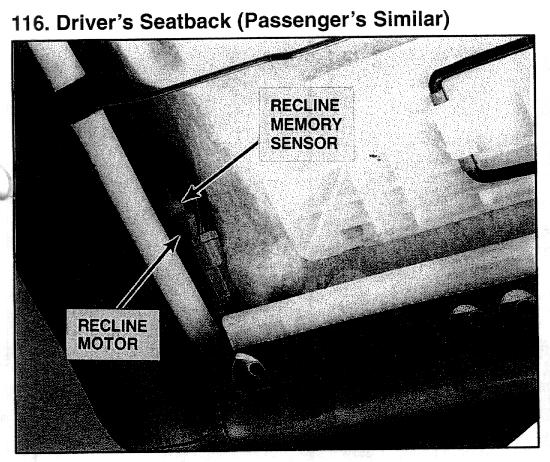

Operation CHARM
: Car repair manuals for everyone.
Home
>>
Acura
>>
1995
>>
Legend Coupe V6-3206cc 3.2L SOHC FI
>>
Repair and Diagnosis
>>
Body and Frame
>>
Sensors and Switches - Body and Frame
>>
Memory Positioning Switch
>>
Locations
>>
Recline Memory Sensor
Recline Memory Sensor

Driver's Seatback (Passenger's Similar)